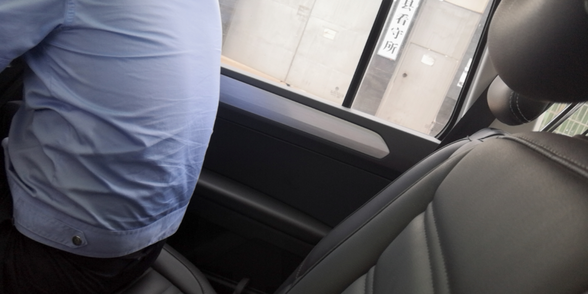
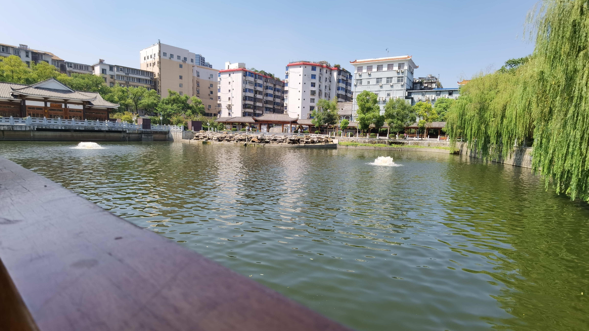
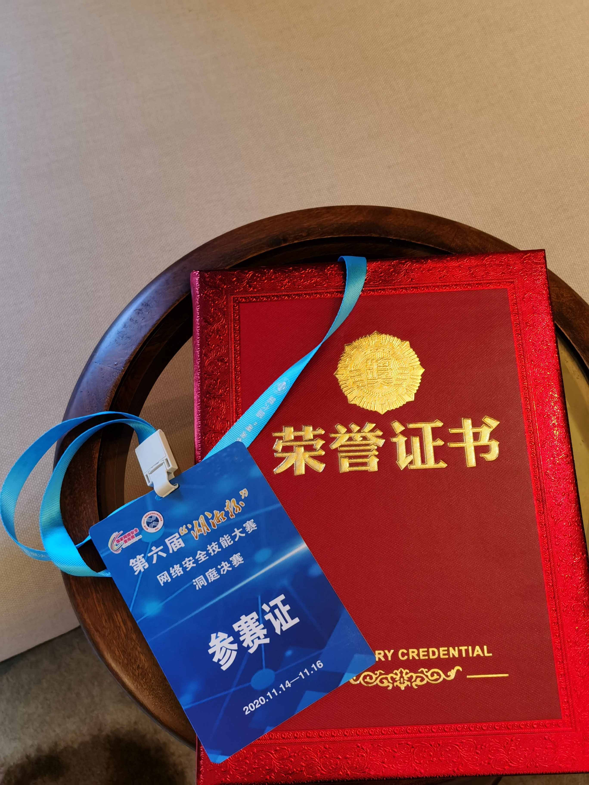

现在时间是2021年1月1日02:41:35，先放个预告，可能会有一片几千字的年终总结（如果不懒🐕的话），现在太晚了，⑧写了，后面有时间再写反正对于2020年的总体感觉就是，太快了，过得真的太快了，我还来不及好好感受，它就溜走了……
1月份放假回家了，爆发了新冠肺炎疫情，那时候开始就基本上到过年都是一直待在家里，爸妈为了上班方便就一直没在老家住，所以用的是从小用到大的转角书桌，整条手臂包括都能放在桌面上，所以比较舒服，可以连续用电脑三四个小时都不感觉累，基本上就是白天玩、睡觉，晚上学习到一两点
然后跟Elli0t他们打了一下i春秋的公益赛，其实这个比赛说起来有四五个pwn都不难，如果多花点时间，说不定能搞出来，但是当时还没学heap，所以就抓瞎了，其实题的质量很不错的，后来和Nep的hr了解了一下，起码需要会heap才能加联合战队，这是第一次碰壁，于是就开始heap了，其间也加了不少大师傅
后来疫情逐渐严重，连村都出不去，每天在家待着，基本上2月和1月也是一样，开学推迟了，和之前相比多了一项上网课，基本上白天上网课晚上搞pwn，一天八九个小时钉在凳子上电脑前。然后2月底打了一个V&N战队的招新赛，有4个pwn，2栈2堆，我一看栈的，一个好像要SROP，还有一个完全不会，而且一眼就看出来不可能是ret2libc这种简单常规题，当时叹气，这比赛又要一个题做不出来了，后来Keer师傅给我发个消息说pwn挺简单的，我直接疑惑，后来我现学SROP和orw，在Keer手把手指点下，把那俩栈题做了，然后去问十月要做几个才能进V&N，说要AK才可以，这是我第二次碰壁，但是通过Keer的指点，学到不少骚姿势，还是特别满足的
3月打了一个第二届BJDCTF，当时第一届这比赛的题在buu上做了一通就感觉不是特别难，第二届还是很不错的，靠手玩贪吃蛇之类的笨办法，做上来8个pwn，特别有成就感。然后3.7—3.9这几天和学校这帮人组队打了一个XCTF的高校战疫赛，这个比赛水平挺高，一个题都做不上来，还是py才做了一两个题，wtcl，然后看到了Timeline Sec发了战队纳新的推文，我一看这队伍打了49名，是一支特别年轻的队伍，感觉特别有潜力，寻思着加个试试，然后在3月10日加入了Timeline Sec战队，队长是苏警院的web大哥 6神，都是兄弟院校的，又都是追求技术的同志，聊起天来特别有共鸣，在此感谢6神在我连续碰壁的时候收留了我，为我后续的学习提供了一部分动力。后面就是基本上3天一道buu，随性而做，那些耿耿于怀的，以前没搞出来的题，都在和师傅们的请教和自己的学习过程中一一攻破。
4月打了一个安恒月赛，赛题算是中等水平吧，就是时间有点短，没记错的话好像是1200+的人参赛我打了99名，做上了几个题，相比于2019年算是一大进步，能做上题了，而且还能通过比赛学到东西，然后给安恒出了两个简单pwn题，不扣钱的话是500一道，这时候我成就感爆棚，一方面是自己能凭借技术赚到一点零花钱了，也算长期以来的正反馈，一方面也是圈子对我技术的一种认可吧，这也推动着我不断学习，这时候学习热情到了巅峰，buu榜的分数也在这个月突破到了5000
这段时间，每天基本上就是早上起来打卡，然后补觉然后吃早餐上网课，开车回老家睡午觉，继续上网课，五六点再开车回来，等吃晚饭，10分钟吃完，就开始进房间关门开始钉在电脑前
然后4月底开始着手发展对象的事情，要写一堆材料，所以4月底到5月初包括五一，一直都在写材料，而我又是一个不到ddl不干活的人，所以连着几天写材料写到3点钟，也算是为了这个事情做出了不少努力，在写材料的过程中，对中国共产党有了更全面的认识，也是从这个时候意识到，我们所有的课程作业、考试什么的，还有各种各样的要上交的材料，其实都只是一个形式，而这些东西本质上其实是为了我们在这么一个过程中学习，比如说我们写作业，看上去只是为了完成任务，但是为了完成任务，要去查资料，要去组织语言来写，需要思考，在这么一个过程中，就学到了很多东西，那么，这么一份作业的目的就达到了，我们不是为了作业而去学习，而是为了学习而去完成作业。大概就这么个意思。
5月份，先是打了一个De1CTF，有一个C++ pwn，完全不会做也看不懂，但是通过黑盒测试，它是有double free漏洞的，和娇姐一起搞这个题，搞了几个小时，不断尝试，最后是做出来了，特别高兴，也算是没有在向别人要完整exp的情况下，做出了第一个堆题，正反馈++。然后5月8日，安恒出题的钱到账了，好起来了，正反馈++。花1600元买了一个MacBook Pro的下半身，接显示屏用，也算体验了一下Mac OS，然后感觉也就那样吧，

最后的下场就是变成了看电影专用机。还打了个ISCC，反正这比赛懂的都懂，打25天，我就说一件事，2019年ISCC我打了几天之后，我同学给我发了几个flag，2020的ISCC自然是恰了个烂奖。然后就是打网鼎杯，网鼎杯4场我打了3场，朱雀组的题也看了看，青龙和玄武的题都很变态，不多说什么，反正这个比赛吧，利益味道很重，我也是从师傅们的聊天中得知，这个比赛养活了一大批人。反正最后是进了线下。其中还打了个第三届BJDCTF，题质量挺高，比上一届难，TaQini就不做人，最后打了89名，正反馈++。然后还打了个防灾的GKCTF，这pwn是一个都不会，没办法，最后打了个六十几名吧 ，正反馈++
5月28日，回学校上课，迎来的是一大波加强的警务化管理，每天无休止的集合吃饭集合吃饭，大热的天，戴着口罩，集合吃饭，走最远的路去上课，实验室不能去，我从这个时候心态开始炸裂，不管做什么事情我都提不起劲，每天就是吃饭看电影上课，负面情绪一天比一天严重，甚至想去看心理医生，但是又想着不要影响了期末考试，就没去。只有佩戴党徽对着党旗宣誓的那一刻，才感觉自己浑身充满力量。
6月底打了个第五空间，我都想好怎么分钱了，但是没打进线下，难顶，我也想像北辰、南梦一样成功。
7月终于放假了，回家了就好起来了，但是要说缓，还是没有缓过劲来，就心情更好了嘛，玩了十几天，去县城派出所见习了十几天，还跟着出差了一回，体验拉满

8月还换了个手机

考了个摩托车驾照，也是正规军了
8月打了一个蓝帽杯初赛进了决赛，打了一个ciscn初赛进了半决赛，打了一个强网杯初赛，前面两个都没啥说的，py氛围浓厚，强网杯的题其实深究起来有四五个pwn都挺简单的，只要稍微花点时间做还是能搞出来，但是当时就只在Keer的指点下做了一个签到pwn，恰了个强网先锋的证书，相比于2019年强网杯还算有点进步吧
9月回学校，进牢之前最后享受了一下校外的空气

9月终于不用集合吃饭了，也不用戴口罩了，但是还是要走最远的路去教室上课，下雨下得有点多，新生军训都没怎么晒到太阳。考了四级，比上次还少，打了个ciscn华东南半决赛，今年情况特殊，所以是线上的，第二天那个简单pwn，如果再给半小时我一定出了，就能弄个三等奖，36名有奖打了四十多名，有点亏。
10月国庆+中秋八天假，回家玩耍，十分快乐，每天都在看电影下馆子，返校那天时间没掐好还差点迟到了。回学校办了电信宽带，还买了个K2P，刷了潘多拉固件，局域网代理直接起飞，我甚至感觉我就住在HK，从此寝室就是天堂，还打了一个ByteCTF，太nm难了，一个题都不会，最简单的还是2.31的orw，我直接裂开
11月开局打了湖湘杯线上，我当时报名的时候寻思着怎么也要进线下玩玩，去年hxb报名了最后就我一个人在单排，然后看师傅们去线下住别墅式酒店还有低保羡慕死了，今年拼了命也要进个线下。最后在众师傅的帮助下，候补最后一名进了线下，11.14去了湖南益阳打线下，线下自然是被打爆，不过我这时候心态已经特别好了，线下嘛，就是面基+旅游的，和Keer面基聊到深夜，听君一席话胜读十年书

然后11月底去深圳打了网鼎杯线下，面基了许多师傅，淦了不少饭，还打进了决赛，当然第二天决赛被锤爆了，我就是来坐在赛场上看比赛的

我还做了个网鼎杯的视频（第一次做视频。。）
12月打了一个ROARCTF，今年的比去年的难不少，题又更少，研究了一下，一个都没做上，然后打了一个蓝帽杯决赛，py氛围很好，么得办法，🐕了个三等奖，属实拉胯。然后圣诞打了个第四届BJDCTF，越来越难越来越离谱，只在lemon师傅的指点下做了一个题，而且后面直线上分的很离谱，难道这种比赛都要py了吗？安恒的比赛变成组队制的了我就发现打不过了，以前单排还能打打，毕竟没几个人是全栈。
再然后就是12.31出去在外边耍，跨年，亏大发了，反正特别亏，懒得说了，越想越气
2020年过得太快了，真的太快了，一眨眼就过去了，我还来不及好好抓紧时间，就过去了。这一年，是我进步最快最多的一年，同时也是我最颓废的一年，体重在这一年增加得最快，技术在这一年长进的最多，思想在这一年进步的最大，睡觉在这一年睡得最久。
我感谢这一年里每一位帮助过我的人，不论是在读书、思考还是技术方面。
2021，希望不要过得那么快吧，让我能好好感受它的每一秒